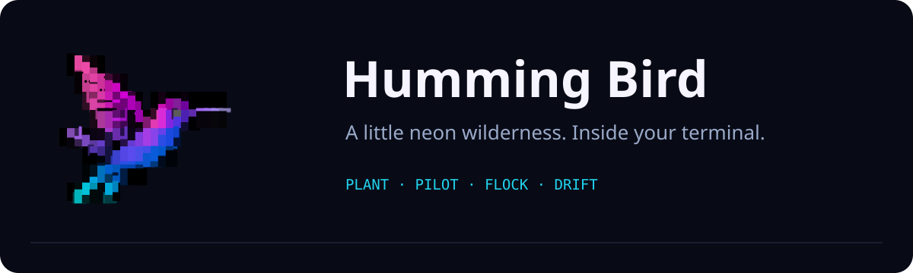

Double-click to plant a heart. Watch a hummingbird find it, feed, and settle on a blade of grass. Or take the controls and fly with a whole neon flock.
pipx install git+https://github.com/fire17/humming-bird.git@v1.0.0 humming-bird
macOS · Linux · WSL · Windows PowerShell. Prefer no Python? Grab a self-contained release for Apple Silicon Mac, x86-64 Linux, or Windows.
Momentum, responsive steering, beak-based feeding and scores. Press P to pilot; N keeps the garden full.
Press O for randomized nectar waves. Set a flock size and leave a little living screensaver on your desktop.
Press E for an extended world. The camera follows your bird toward any edge, with leaves and hearts staying in place.
60 wing poses, independent spinning hearts, and a 30 Hz renderer. Real multi-cell Unicode art—not an emoji. No telemetry, no runtime network, no global keyboard hooks.